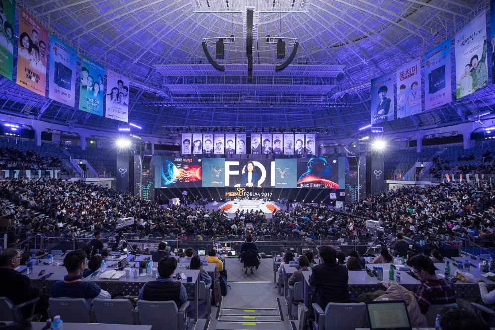

대한민국 청년들을 위한 멘토링 축제 2018 MBN Y포럼이 오는 2월 28일 서울 장충체육관에서 열린다. MBN Y포럼은 명풍방송 MBN과 매일경제신문이 청년들에게 꿈과 도전정신을 심어주기 위해 2011년부터 시작한 청년 멘토링 축제로 올해로 8회째를 맞는다. 올해 주제는 ‘뉴 챔피언이 되어라(Be a New Champion)'이다. 꿈을 향한 열정으로 챔피언의 자리에 오른 각 분야의 영웅들이 한 자리에 모여 자신만의 성공 비법을 들려준다.
이를 위해 ‘2018 MBN Y포럼’에 글로벌 방송사 앵커, 뇌과학자, AI 전문가, 탐험가 등 청년들의 큰 관심을 받는 분야의 전문가들이 한 자리에 모인다. 오전 8시 30분부터 시작되는 멘토링은 △개막쇼 △앵커쇼 △특별강연 △미래쇼 △두드림쇼 △영웅쇼로 이어진다.
